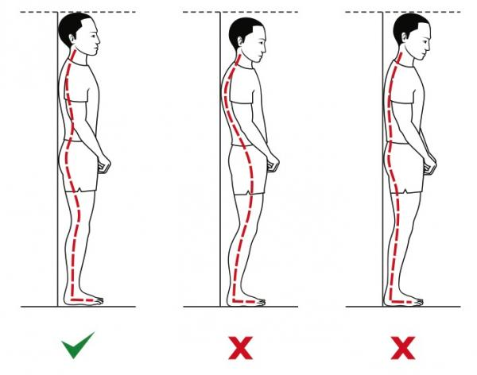
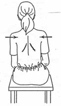

プログラマーとデザイナーはほとんどの時間をコンピューターの前で過ごします。効果的な運動は彼らがより良い仕事をするのに役立ちます。
伝統的な：
コンピューターデスクに座っているとき
- 足は床に着けます。
- 両手は肘で曲げます。
- タイピングするとき、手は机の上に置くべきです。
- キーボードとマウスは手の届くところに置くべきです。
- ディスプレイは視線の高さに、高すぎず低すぎず置くべきです。
- 光はできれば上から来るのが良いです。つまり、光は天井から照らされるべきです。
- 20分ごとに遠くを見ましょう。近くの物体を長時間見つめることで生じる目の疲れを軽減できます。
- マウスは手の大きさにほぼ合うものを使います。
- フルサイズの人間工学に基づいたキーボードを使用してください。個人的にはMicrosoftとLogitechのブランドが好きです。

エクササイズ：
1.目の体操
現在のところ、目の体操が視力を改善するという明確な科学的データはありません。しかし、これらの目の運動のほとんどは人間工学に基づいています。
一日中画面を見ていて目が乾くと感じる場合は、保湿用の目薬を使用しても構いません。また、仕事中は部屋やオフィスに十分な照明があることを確認してください。もし昼間にオフィスを出たときに目がチクチクすると感じたら、それはオフィスの照明が十分でないことを意味します。
暗い環境での作業は近視の原因になります。必ず十分な照明を確保してください。
2.手のひらのエクササイズ
手のひらのエクササイズは、一日中コンピューターの前でタイピングしている人には必要です。

1.ウォームアップ
図のように手を振ってください。1分間行うと屈筋の緊張を防げます。手を洗ったばかりで、水を振り払っているところを想像してください。
2.指を伸ばす

手のひらを上に向け、指を下に向けます。指をできるだけ開いてから手のひらを閉じます。その間、指は離したままにします。
親指を伸ばす

- 手を上に向け、手のひらを自分のほうに向け、もう一方の手で親指をそっと下に曲げます。
- 20秒間キープします。
- もう一方の手でも繰り返します。
3.手を伸ばす

- 腕をまっすぐ伸ばし、手首の内側を下に向けます（図参照）。
- 指を軽く伸ばし、痛みを引き起こさない範囲で、もう一方の手で手のひらをできるだけ大きな角度に曲げます。
- 20秒間キープします。
- もう一方の手でも繰り返します。
4.逆方向に手を伸ばす。
- 手を机の縁に置き、手のひらを自然に下に向けます（図の動作のように）。
- もう一方の手でこの手をつかみ、痛みを引き起こさない範囲で、耐えられる最大の圧力をそっと加えます。
- 痛みは感じないが、手が伸びているのを感じられる程度にしてください。
- 20秒間キープします。
- もう一方の手でも繰り返します。
3.首のエクササイズ
筋肉と首のしびれを防ぐ基本的なストレッチです。このストレッチは体型を維持するのに役立つだけでなく、突出した頸椎を改善することもできます。

次の手順に従ってください。
- 部屋の角（オフィスでも可）を見つけ、角から約0.6メートルの場所に立ちます。
- 両足を揃えます。
- 両腕をそれぞれ壁に付けます。肘は肩より少し低くします（図1）。
- 前腕は完全に壁に密着させます。密着していない場合は調整してください。
- 体をまっすぐに保ちながら、できるだけ壁に向かって傾けます。首の少し下、肩と胸の前面に伸びを感じるでしょう。
- 30秒間キープします。
これにより、肩、胸、首の位置が整います。
4.あごのエクササイズ

あごのエクササイズは、首の痛みを和らげる最も簡単で効果的な運動の一つです。この運動は、一日中画面上の小さな文字を見ることで生じる問題を解決できます。
この方法はストレッチになるだけでなく、筋肉を強化し、頭を肩と一直線に戻すのに役立ちます。
この運動には壁が必要です。このように壁に背を向けて、まっすぐ立ちます。

手をあごに置き、あごを首に向かって押します。5秒間キープしてから離します。これを5回行います。
これは首に良いだけでなく、姿勢を改善し、目のリラックスにも役立ちます。毎日少なくとも2〜3回行うようにしてください。
5.背中のエクササイズ

仰向けに寝て、両膝を曲げます。
- 膝を右側に倒します。
- 15秒間キープします。
- 開始位置に戻ります。
- 膝を左側に倒します。
- 15秒間キープします。
- 開始位置に戻ります。
- 5回行います。

- 背中を反らせて、腰を浮かせます。痛みを引き起こさない範囲で、できるだけ高く上げて5秒間キープし、リラックスします。
- 5回行います。

- 図のように、四つん這いになります。
- リラックスし、力を入れすぎないようにします。
- 誰かに引っ張られているかのように、背中を上に丸めます。
- 5秒間キープします。
- 元の位置に戻ります。
- 5回行います。
1.椅子にまっすぐ座り、右足を左足の上に置きます。2.左手を右足に当て、体をひねります。3.10秒間キープします。4.反対方向でも行います。

- 椅子にまっすぐ座り、肩を後ろに引きます。
- 図のように。
- 5秒間キープしてから離します。
6.脚のエクササイズ
休憩室で

- まっすぐ立ち、両脚を少し開きます。離しすぎず、近すぎない程度に。
- 顔をまっすぐに保ちながら、あごの力を抜きます。
- 背筋を伸ばしたまま、右足をできるだけ大きく前に踏み出します。
- 左足のかかとを少し上げ、つま先は地面に付けたままにします。
- 同時に、膝を曲げます。
- 反対の足でもう一度行います。
ジャンプ運動

1.図のようにまっすぐ立ちます。2.ジャンプしたときに両手を頭上に上げ、脚を自然に伸ばします（2番目の図のよう）。3.もう一度ジャンプして、最初の位置に戻ります。4.10回繰り返します。
足のエクササイズ

- 両足を階段に乗せ、かかとを浮かせ、つま先に重心を置きます。
- 体の他の部分はまっすぐに保ち、かかとを下げて10秒間キープします。
- かかとを上げて、5秒間キープします。
- 全体のプロセスを繰り返します。
- 5回行います。
上記の運動やエクササイズは、ソフトウェア開発者とデザイナーにとって非常に有益です。
原文：http://mohammedlakkadshaw.com/blog/10_Must_do_excersies_and_ergonomics_for_software_developers_and_designers.html
訳文：http://www.codeceo.com/article/every-programmer-need-exercise.html